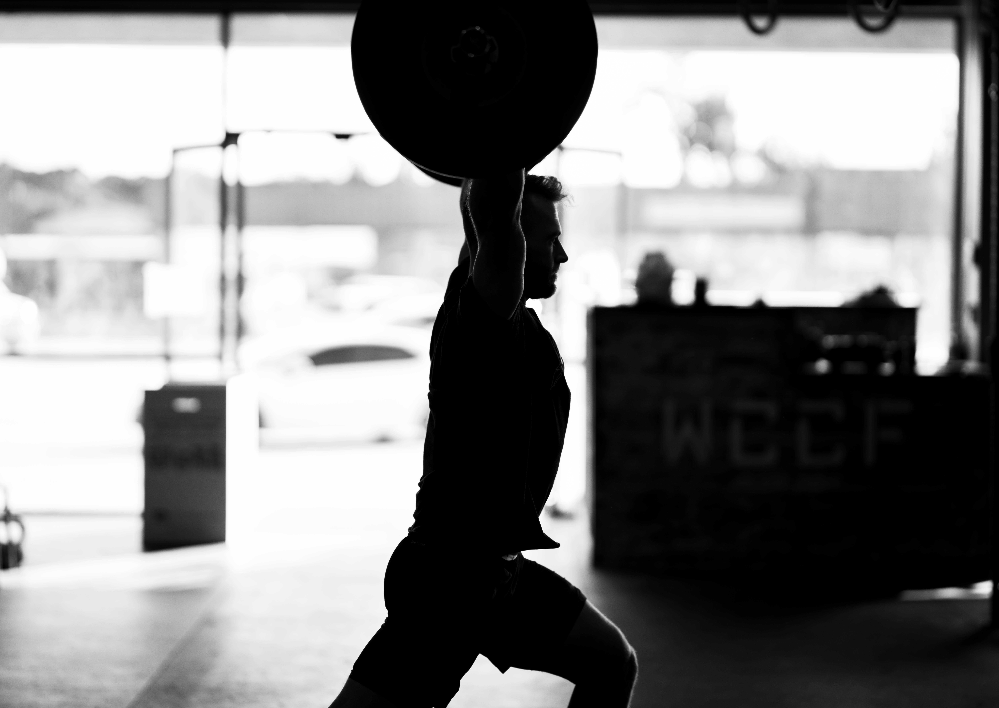

Lifting 101
I am sure you are wondering what goes into lifting. There is much more involved behind the scenes than just the final result, whether that be in a photo or how a competitor looks during their show. Lifting is not just about lifting weights. It is about mindset and determination. A great deal of discipline is required, especially when it comes to making dramatic changes in diet. Lifting involves a full lifestyle change, from sleep habits to eating routines. Every part of your daily life plays a role. This page will explain the basic foundations that are important for success in lifting
Built Through Consistency
You might not see progress right away, and it can take longer than you expect. But every rep, every meal, and every rest day matters. Stay patient, stay consistent, and the results will come.